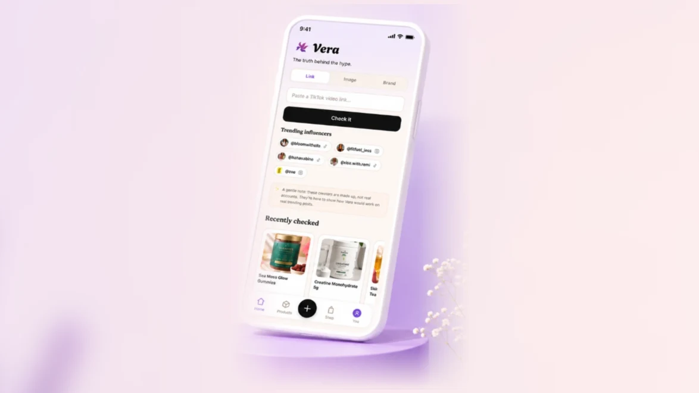
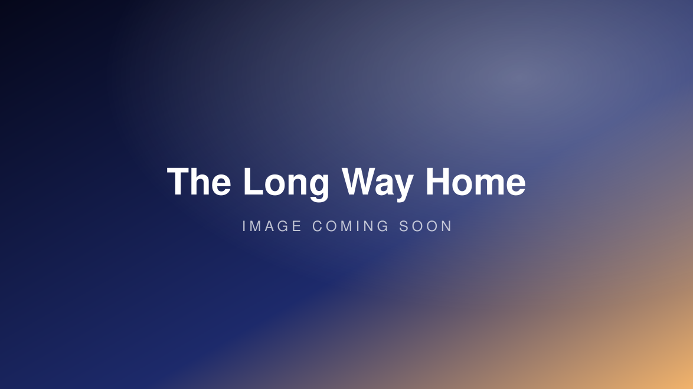

I love shaping, designing and building AI tools that explore generative AI, thoughtful interactions, emotion, delight, sound, image and language. I prototype fast, iterate in the open, and sweat the details until the magic holds up in the real world.
Industry: Pets & Personalised Art
Custom cosmic portraits of your pets. Upload a photo and your pet is reimagined as a one-of-a-kind cosmic portrait.
Industry: Wellbeing
A mood, reframed. Share how you feel today and receive a letter of perspective from the person you are becoming.
Industry: Music & Wellbeing
A moment, recomposed. Tell it about a moment in your life and it composes an original piece of music for it.
Industry: Wellbeing
A loss, regrown. Turns a loss into a flower that grows in a shared garden of resilience.

Industry: Health & Nutrition
Score the claim, not the influencer. A supplement fact-checker built in two days at the ZOE hackathon.

Industry: Gaming
An astronaut game. About drifting, gravity, and finding your way back.